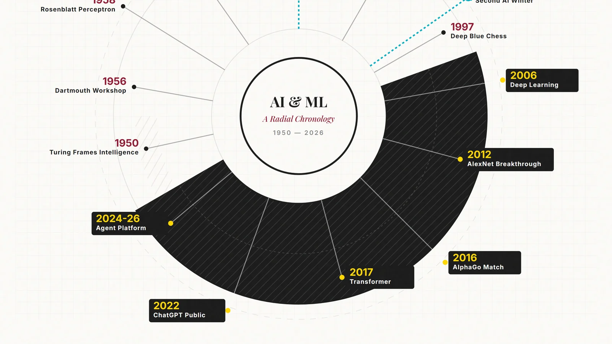

Artifact 01 / Visual research
From Symbolic Rules to Generative Systems
A visual history of AI and machine learning from 1950 to 2026.
Open case studyArtifact 02 / Applied analysis
Choosing the Right Model for the Problem
A practical comparison of email spam filtering and manufacturing image inspection.
Open case study